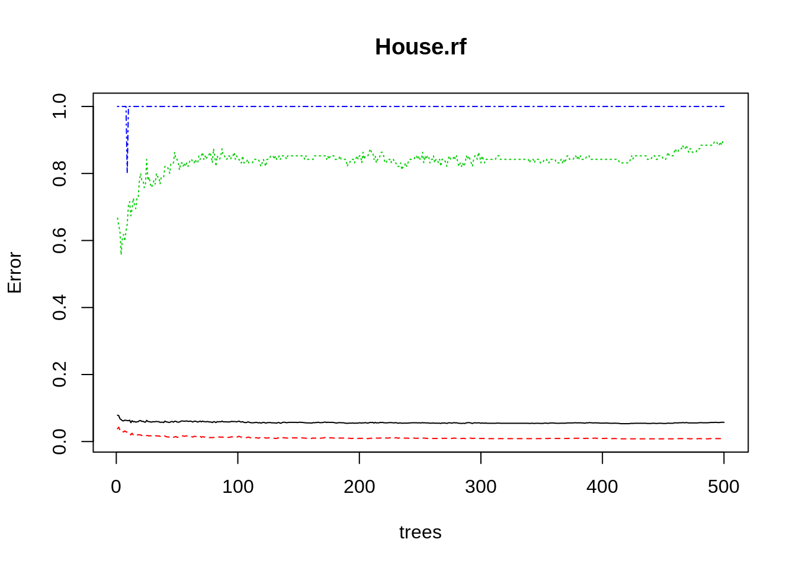
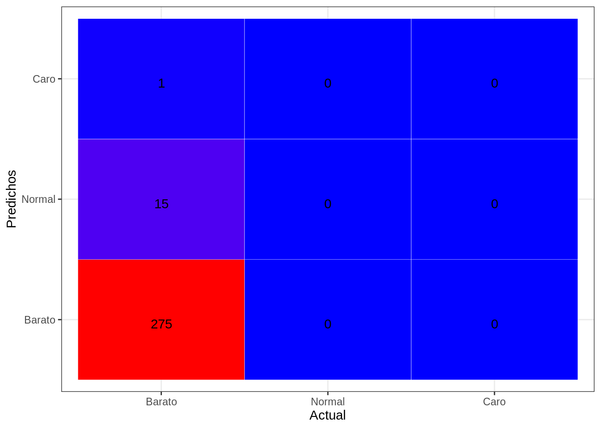

En este punto vamos a aplicar los bosques de árboles a nuestro modelo. Ya conocemos el funcionamiento de los árboles de decisión por lo que nos será fácil entender el sistema de funcionamiento de los bosques: es un conjunto de árboles con distintos parámetros y mediante un sistema de votación de los resultados de los árboles obtendremos el resultado del bosque.
Para empezar, cargamos nuestros datos.
library(rpart)
library(rpart.plot)
library(rattle)
library(tidyverse)
library(readr)
dataTrain <- readRDS("datasetTrain.csv")
myvars <- names(dataTrain) %in% c("SalePrice")
dataTrain <- dataTrain[!myvars]
dataTest <- readRDS("datasetTest.csv")
myvars <- names(dataTest) %in% c("SalePrice")
dataTest <- dataTest[!myvars]
val <- readRDS("datasetValidation.csv")
myvars <- names(val) %in% c("SalePrice")
val <- val[!myvars]
set.seed(123)Para hacer el bosque aleatorio de árboles cargamos la biblioteca de R específica. En este primer bosque no vamos a añadir ningún hiperparámetro.
#NUESTRO BOSQUE DE ARBOLES
library(randomForest)## randomForest 4.6-14## Type rfNews() to see new features/changes/bug fixes.##
## Attaching package: 'randomForest'## The following object is masked from 'package:dplyr':
##
## combine## The following object is masked from 'package:ggplot2':
##
## margin## The following object is masked from 'package:rattle':
##
## importanceHouse.rf=randomForest(GrupoPrecio ~ . , data = dataTrain)
House.rf##
## Call:
## randomForest(formula = GrupoPrecio ~ ., data = dataTrain)
## Type of random forest: classification
## Number of trees: 500
## No. of variables tried at each split: 6
##
## OOB estimate of error rate: 5.72%
## Confusion matrix:
## Barato Normal Caro class.error
## Barato 1722 15 0 0.008635579
## Normal 85 10 0 0.894736842
## Caro 4 1 0 1.000000000print(House.rf)##
## Call:
## randomForest(formula = GrupoPrecio ~ ., data = dataTrain)
## Type of random forest: classification
## Number of trees: 500
## No. of variables tried at each split: 6
##
## OOB estimate of error rate: 5.72%
## Confusion matrix:
## Barato Normal Caro class.error
## Barato 1722 15 0 0.008635579
## Normal 85 10 0 0.894736842
## Caro 4 1 0 1.000000000plot(House.rf)
Cuando hacemos el plot del bosque aleatorio de árboles vemos el error para cada clase (las líneas coloreadas, el orden de aparición es en el que aparecen en el print: Barato, Normal y Caro). La línea negra representa el error medio del bosque. Si queremos ver la importancia de las variables del modelo:
importance(House.rf)## MeanDecreaseGini
## GrLivArea 15.78382491
## LotArea 9.37963486
## Total_Bathrooms 4.85170251
## Total_porch_SF 9.20790796
## MSZoning 0.89621138
## LandContour 2.20739976
## LotConfig 1.61966739
## Condition1 0.93983292
## BldgType 0.46564174
## HouseStyle 2.00895162
## RoofStyle 1.40930772
## MasVnrType 3.66117404
## Foundation 0.78001172
## SaleType 1.69558871
## SaleCondition 2.02383149
## YearBuilt 2.57615524
## OverallQual 10.21854374
## OverallCond 1.74139849
## PavedDrive 0.02386741
## Fence 0.68703471
## BsmtFinSF1 13.93250904
## Functional 0.45707341
## ExterQual 3.66136372
## BsmtQual 5.26639628
## BsmtExposure 5.22431904
## BsmtFinType1 1.69760023
## BsmtUnfSF 8.73546724
## CentralAir 0.01300000
## KitchenQual 3.35660864
## Fireplaces 2.05917227
## FireplaceQu 3.35906364
## BedroomAbvGr 3.03419590
## KitchenAbvGr 0.03119856
## LotShape 2.14339547
## GarageArea 14.72383709
## GarageCond 0.06897115
## Neighborhood 11.16317274
## has2ndFloor 0.00000000
## Alley 0.02456022
## TotalSF 21.99298234
## GarageType 1.22345114
## MasVnrArea 9.70352114
## MSSubClass 3.00665129Lo que nos indica la columna es que cuanto más grande sea ese factor, más importante es en la decisión final del modelo.
##PROBANDO SOBRE EL TESTDATA:
predTrain <- predict(House.rf, dataTest, type = "class")
## MATRIZ DE CONFUSION
table(predTrain, dataTest$GrupoPrecio) ##
## predTrain Barato Normal Caro
## Barato 739 33 2
## Normal 5 9 0
## Caro 0 0 0##ERROR PARA CADA CLASE
House.rf$confusion[, 'class.error']## Barato Normal Caro
## 0.008635579 0.894736842 1.000000000# Matriz de confusión -> y ACCURACY DEL MODELO
(mc <- with(dataTest,table(predTrain, GrupoPrecio)))## GrupoPrecio
## predTrain Barato Normal Caro
## Barato 739 33 2
## Normal 5 9 0
## Caro 0 0 0100 * sum(diag(mc)) / sum(mc)## [1] 94.92386Vemos que tenemos un error del 0,8% para la clase “Barato”, un error del 89% para la clase “Normal” y siempre nos equivocamos a la hora de predecir cuando una casa es cara.
Si vamos con una exploración de hiperparámetros más pronfunda usaremos la función trainControl().
-> MTRY:
library(caret)## Loading required package: lattice##
## Attaching package: 'caret'## The following object is masked from 'package:purrr':
##
## liftlibrary(e1071)
trControl <- trainControl(method = "cv",
number = 10,
search = "grid")
set.seed(1234)
# Run the model
rf_default <- train(GrupoPrecio~.,
data = dataTrain,
method = "rf",
metric = "Accuracy",
trControl = trControl)
# Print the results
print(rf_default)## Random Forest
##
## 1837 samples
## 43 predictor
## 3 classes: 'Barato', 'Normal', 'Caro'
##
## No pre-processing
## Resampling: Cross-Validated (10 fold)
## Summary of sample sizes: 1653, 1654, 1653, 1653, 1652, 1653, ...
## Resampling results across tuning parameters:
##
## mtry Accuracy Kappa
## 2 0.9455743 0.0000000
## 90 0.9433855 0.2550271
## 178 0.9395722 0.2740636
##
## Accuracy was used to select the optimal model using the largest value.
## The final value used for the model was mtry = 2.El algoritmo usa 500 árboles y prueba con 3 valores de mtry: 2, 90 y 178. Vamos a usar mtry = 2, ya que obtenemos el valor mayor de la accuracy con ese valor para el hiperparámetro.
-> MAXNODE:
store_maxnode <- list()
tuneGrid <- expand.grid(.mtry = 2)
for (maxnodes in c(10: 20)) {
set.seed(1234)
rf_maxnode <- train(GrupoPrecio~.,
data = dataTrain,
method = "rf",
metric = "Accuracy",
tuneGrid = tuneGrid,
trControl = trControl,
importance = TRUE,
nodesize = 14,
maxnodes = maxnodes,
ntree = 300)
key <- toString(maxnodes)
store_maxnode[[key]] <- rf_maxnode
}
results_node <- resamples(store_maxnode)
summary(results_node)##
## Call:
## summary.resamples(object = results_node)
##
## Models: 10, 11, 12, 13, 14, 15, 16, 17, 18, 19, 20
## Number of resamples: 10
##
## Accuracy
## Min. 1st Qu. Median Mean 3rd Qu. Max. NA's
## 10 0.9402174 0.9454294 0.9456522 0.9455743 0.9456522 0.9508197 0
## 11 0.9402174 0.9454294 0.9456522 0.9455743 0.9456522 0.9508197 0
## 12 0.9402174 0.9454294 0.9456522 0.9455743 0.9456522 0.9508197 0
## 13 0.9402174 0.9454294 0.9456522 0.9455743 0.9456522 0.9508197 0
## 14 0.9402174 0.9454294 0.9456522 0.9455743 0.9456522 0.9508197 0
## 15 0.9402174 0.9454294 0.9456522 0.9455743 0.9456522 0.9508197 0
## 16 0.9402174 0.9454294 0.9456522 0.9455743 0.9456522 0.9508197 0
## 17 0.9402174 0.9454294 0.9456522 0.9455743 0.9456522 0.9508197 0
## 18 0.9402174 0.9454294 0.9456522 0.9455743 0.9456522 0.9508197 0
## 19 0.9402174 0.9454294 0.9456522 0.9455743 0.9456522 0.9508197 0
## 20 0.9402174 0.9454294 0.9456522 0.9455743 0.9456522 0.9508197 0
##
## Kappa
## Min. 1st Qu. Median Mean 3rd Qu. Max. NA's
## 10 0 0 0 0 0 0 0
## 11 0 0 0 0 0 0 0
## 12 0 0 0 0 0 0 0
## 13 0 0 0 0 0 0 0
## 14 0 0 0 0 0 0 0
## 15 0 0 0 0 0 0 0
## 16 0 0 0 0 0 0 0
## 17 0 0 0 0 0 0 0
## 18 0 0 0 0 0 0 0
## 19 0 0 0 0 0 0 0
## 20 0 0 0 0 0 0 0La Accuracy se mantiene constante, asi que usaremos el valor más pequeño: 10.
-> NUMERO DE ARBOLES:
store_maxtrees <- list()
for (ntree in c(250, 300, 350, 400, 450, 500, 550, 600, 800, 1000, 2000)) {
set.seed(5678)
rf_maxtrees <- train(GrupoPrecio~.,
data = dataTrain,
method = "rf",
metric = "Accuracy",
tuneGrid = tuneGrid,
trControl = trControl,
importance = TRUE,
nodesize = 14,
maxnodes = 10,
ntree = ntree)
key <- toString(ntree)
store_maxtrees[[key]] <- rf_maxtrees
}
results_tree <- resamples(store_maxtrees)
summary(results_tree)##
## Call:
## summary.resamples(object = results_tree)
##
## Models: 250, 300, 350, 400, 450, 500, 550, 600, 800, 1000, 2000
## Number of resamples: 10
##
## Accuracy
## Min. 1st Qu. Median Mean 3rd Qu. Max. NA's
## 250 0.9402174 0.9453552 0.9456522 0.9455716 0.9456522 0.9508197 0
## 300 0.9402174 0.9453552 0.9456522 0.9455716 0.9456522 0.9508197 0
## 350 0.9402174 0.9453552 0.9456522 0.9455716 0.9456522 0.9508197 0
## 400 0.9402174 0.9453552 0.9456522 0.9455716 0.9456522 0.9508197 0
## 450 0.9402174 0.9453552 0.9456522 0.9455716 0.9456522 0.9508197 0
## 500 0.9402174 0.9453552 0.9456522 0.9455716 0.9456522 0.9508197 0
## 550 0.9402174 0.9453552 0.9456522 0.9455716 0.9456522 0.9508197 0
## 600 0.9402174 0.9453552 0.9456522 0.9455716 0.9456522 0.9508197 0
## 800 0.9402174 0.9453552 0.9456522 0.9455716 0.9456522 0.9508197 0
## 1000 0.9402174 0.9453552 0.9456522 0.9455716 0.9456522 0.9508197 0
## 2000 0.9402174 0.9453552 0.9456522 0.9455716 0.9456522 0.9508197 0
##
## Kappa
## Min. 1st Qu. Median Mean 3rd Qu. Max. NA's
## 250 0 0 0 0 0 0 0
## 300 0 0 0 0 0 0 0
## 350 0 0 0 0 0 0 0
## 400 0 0 0 0 0 0 0
## 450 0 0 0 0 0 0 0
## 500 0 0 0 0 0 0 0
## 550 0 0 0 0 0 0 0
## 600 0 0 0 0 0 0 0
## 800 0 0 0 0 0 0 0
## 1000 0 0 0 0 0 0 0
## 2000 0 0 0 0 0 0 0Con todos estos hiperparámetros obtenidos de pruebas iterativas, pasamos a entrenar el modelo:
library(randomForest)
fit_rf <- randomForest(GrupoPrecio ~ . , data = dataTrain, mtry=2, maxnodes=10, ntree=250)PROBAMOS EL MODELO:
##PROBANDO SOBRE EL TESTDATA:
predTrain_2 <- predict(fit_rf, dataTest, type = "class")
##ERROR PARA CADA CLASE
fit_rf$confusion[, 'class.error']## Barato Normal Caro
## 0 1 1# Matriz de confusión -> y ACCURACY DEL MODELO
(mc <- with(dataTest,table(predTrain_2, GrupoPrecio)))## GrupoPrecio
## predTrain_2 Barato Normal Caro
## Barato 744 42 2
## Normal 0 0 0
## Caro 0 0 0resultado <- 100 * sum(diag(mc)) / sum(mc)
resultado## [1] 94.41624Después de ajustar estos hiperparámetros, vemos que el accuracy ha aumentado.
pred = predict(fit_rf, val, type = "class")
table = table(pred, obs = val$GrupoPrecio, dnn = c("Actual", "Predichos"))
confusionMatrix(table)## Confusion Matrix and Statistics
##
## Predichos
## Actual Barato Normal Caro
## Barato 275 15 1
## Normal 0 0 0
## Caro 0 0 0
##
## Overall Statistics
##
## Accuracy : 0.945
## 95% CI : (0.9122, 0.9682)
## No Information Rate : 0.945
## P-Value [Acc > NIR] : 0.566
##
## Kappa : 0
##
## Mcnemar's Test P-Value : NA
##
## Statistics by Class:
##
## Class: Barato Class: Normal Class: Caro
## Sensitivity 1.000 0.00000 0.000000
## Specificity 0.000 1.00000 1.000000
## Pos Pred Value 0.945 NaN NaN
## Neg Pred Value NaN 0.94845 0.996564
## Prevalence 0.945 0.05155 0.003436
## Detection Rate 0.945 0.00000 0.000000
## Detection Prevalence 1.000 0.00000 0.000000
## Balanced Accuracy 0.500 0.50000 0.500000draw_confusion_matrix <- function(tab, tab_Actual, tab_Predict){
confusion_matrix <- as.data.frame(tab)
Actual <- factor(confusion_matrix[[tab_Actual]])
Predichos <- factor(confusion_matrix[[tab_Predict]])
Y <- confusion_matrix$Freq
df <- data.frame(Actual, Predichos, Y)
ggplot(data = df, mapping = aes(x = Actual, y = Predichos)) +
geom_tile(aes(fill = Y), colour = "white") +
geom_text(aes(label = sprintf("%1.0f", Y)), vjust = 1) +
scale_fill_gradient(low = "blue", high = "red") +
theme_bw() + theme(legend.position = "none")
}
draw_confusion_matrix(table, "Actual", "Predichos")
library(pROC)## Type 'citation("pROC")' for a citation.##
## Attaching package: 'pROC'## The following objects are masked from 'package:stats':
##
## cov, smooth, varpredRoc <- predict(fit_rf, newdata=val, type="prob")
area_curva <- multiclass.roc(val$GrupoPrecio, predRoc,)
area_curva##
## Call:
## multiclass.roc.default(response = val$GrupoPrecio, predictor = predRoc)
##
## Data: multivariate predictor predRoc with 3 levels of val$GrupoPrecio: Barato, Normal, Caro.
## Multi-class area under the curve: 0.6393Vemos que el area bajo la curva en este bosque aleatorio no es muy alta, por lo que podemos decir que no tenemos un modelo muy bueno.